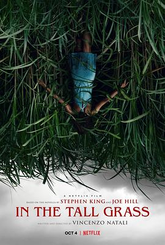

高草丛中 / In the Tall Grass
又名：高草魅声(台) / 草丛失魂
从爱死机2赶来，原来是个很常规的恐怖片，没有什么jump scare这个很良心
作品信息
| 导演 | 文森佐·纳塔利 |
| 编剧 | 文森佐·纳塔利 / 斯蒂芬·金 / 乔·希尔 |
| 主演 | 蕾斯拉·德·奥利维拉 / 艾弗里·维提德 / 帕特里克·威尔森 / 小威尔·布伊 / 蕾切尔·威尔森 / 哈里森·吉尔伯特森 / 蒂芙妮·赫尔姆 |
| 类型 | 剧情 / 惊悚 / 恐怖 |
| 制片国家/地区 | 加拿大 / 美国 |
| 语言 | 英语 |
| 上映日期 | 2019-09-20(奥斯汀奇幻电影节) / 2019-10-04(美国) |
| 片长 | 101分钟 |
| IMDb | tt4687108 |
说过什么
2021-05-23 22:09:01
看过 · 时间来自广播，短评来自标记页
从爱死机2赶来，原来是个很常规的恐怖片，没有什么jump scare这个很良心
最后一次看到是 2026-08-01T11:05:21+10:00 · 豆瓣原页